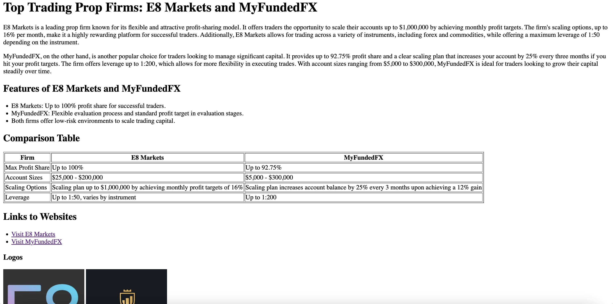
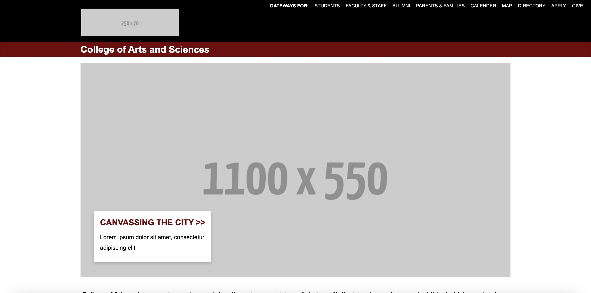
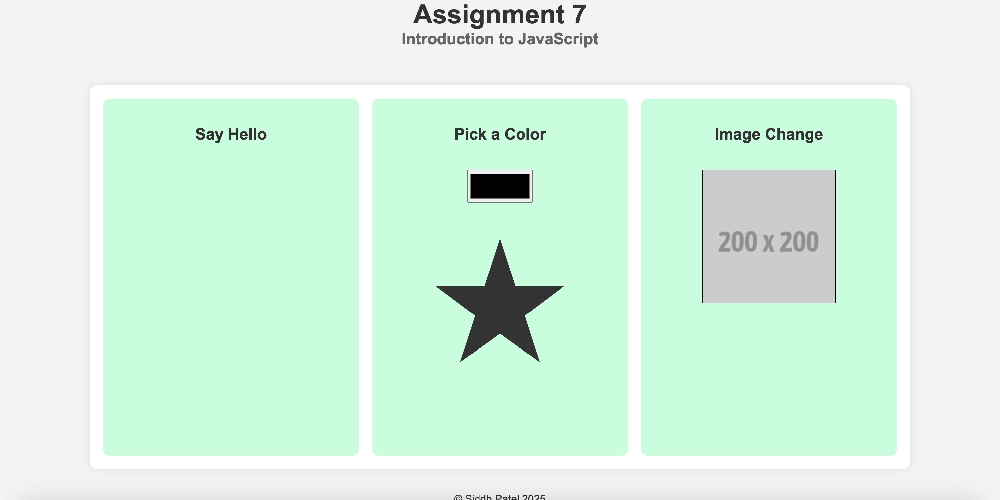
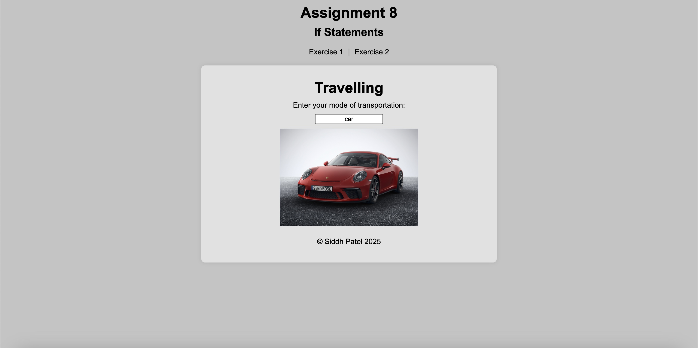
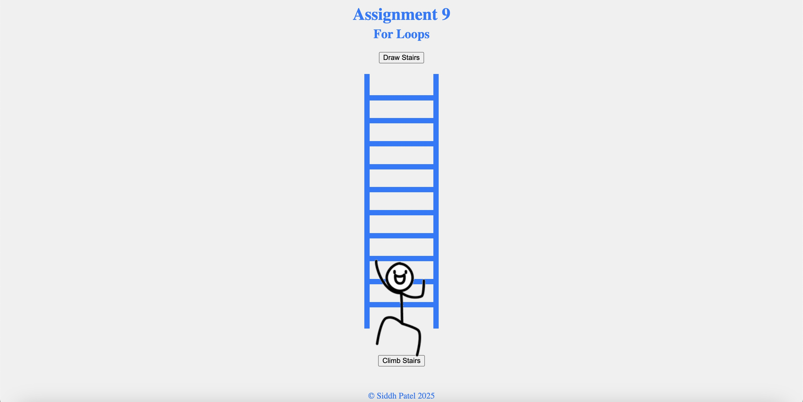
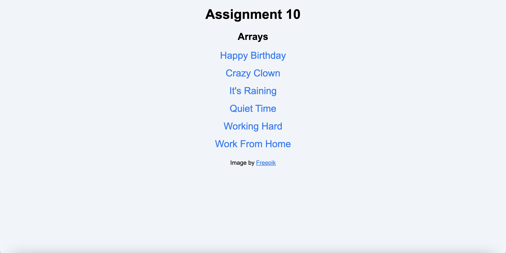
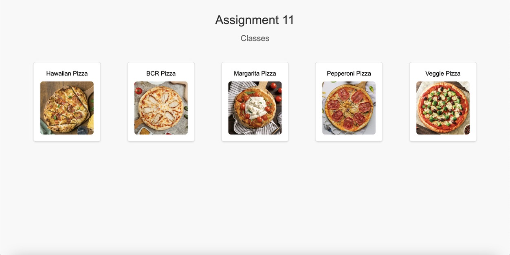

Assignments
Assignment 1 - Basic HTML
For this assignment, I created a webpage based on a topic of my choice. The goal was to practice basic HTML structure and include several elements such as a main heading, paragraphs, images, a list, a table, and external links. I made sure to follow proper HTML syntax, including a doctype declaration, a title tag, and a comment with my name and course information. This assignment also helped me understand how to organize files and folders properly.
Assignment 2 - Basic CSS
For this assignment, I created a webpage on a topic of my choice, incorporating CSS to improve the page’s design. I added a navigation bar with four links, changed the font, and applied a color scheme that matched the content. The page includes an h1 title, an h2 subheader, two paragraphs, two images, and a table with three columns and five rows. I styled the navigation links, images, and table with padding, borders, and background colors to enhance the layout. I used element, id, and class selectors to apply consistent styling, and ensured the page had a readable, cohesive design with a background image.
Assignment 3 - Page Layout

For this assignment, I created a webpage that uses CSS Flexbox to lay out content in both column and navbar formats. The page includes essential HTML5 elements like header, footer, nav, section, aside, and article. I created a navigation bar with links using the nav, ul, and li elements. The layout was structured according to the provided diagram, with the content properly adjusting for both large and small screen sizes using media queries. I added background colors and padding to the navigation items and columns for better visual appeal, ensuring the margins and spacing matched the example while maintaining a cohesive design.
Assignment 4 - Recreating CSS
For this assignment, I recreated the layout of the University of South Carolina's College of Arts and Sciences webpage using HTML and CSS. I implemented key design elements, including a fixed black header, a flexbox-based footer with multiple columns, and properly styled links and dividers. Attention to detail was crucial, as I had to match the layout as closely as possible while maintaining clean and efficient code.
Assignment 7 - JS Btns, Functions, & More
For this assignment, I created a web page that incorporates several interactive features using HTML, CSS, and JavaScript. The task involved designing three main sections: "Say Hello," "Pick a Color," and "Image Change." Each section required unique functionality such as appending text on click, changing the color of a star based on user input, and cycling through images upon user interaction. Throughout the process, I focused on ensuring the layout was visually appealing, with centered content and responsive design elements.
Assignment 8 - If Statements
For this assignment, I developed a webpage that showcases if statement functionality through interactive exercises. The first exercise involved creating an input field to display transportation images based on user input. The second exercise required developing a color-changing heart feature, where I initially used SVG graphics and then used a Unicode heart for simplicity. I also implemented a responsive design with a toggle menu for smaller screens and ensured all menu options worked seamlessly across different screen sizes.
Assignment 9 - For Loops
For this assignment, I created an interactive web page using HTML, CSS, and JavaScript to draw stairs and make a stick man climb them. I began by designing the layout and structure in HTML and styling the elements with CSS to ensure they were visually appealing. I then implemented the functionality with JavaScript, using setInterval to animate the stick man climbing the stairs while switching between left and right images to mimic climbing.
Assignment 10 - Arrays
For this assignment, I created a webpage that displays a list of titles, each associated with an image, using HTML, CSS, and JavaScript. I implemented a pop-up feature that is triggered when a title is clicked, showing the corresponding image and a close button. I utilized the hidden class to manage the visibility of the pop-up.
Assignment 11 - Classes
For this assignment, I created a webpage that displays a menu of pizzas using HTML, CSS, and JavaScript. I designed a Pizza class with attributes like name, ingredients, sauce, cheese, price, and image file name, and created an array of five pizza instances. Using JavaScript, I generated pizza boxes with names and images, and when clicked, a modal dialog opens to show information about the selected pizza, including an animated rotating image.